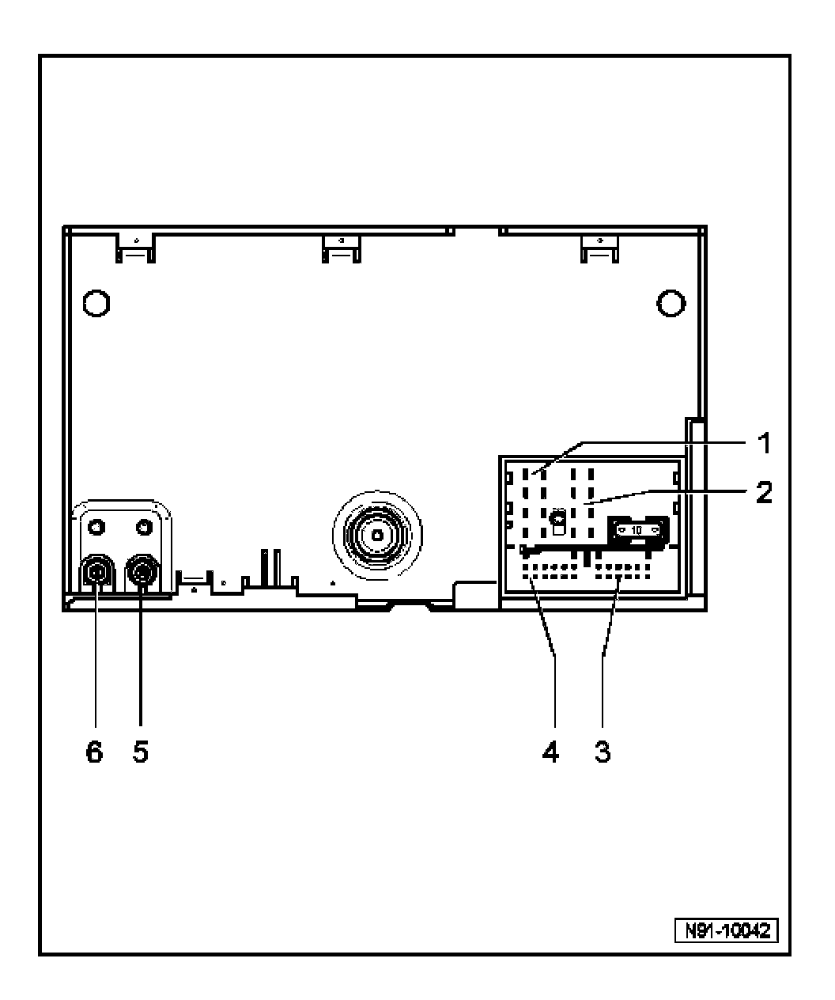
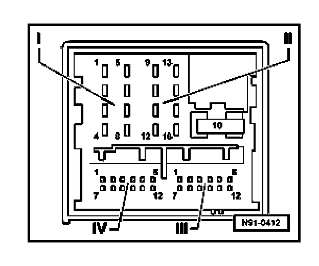
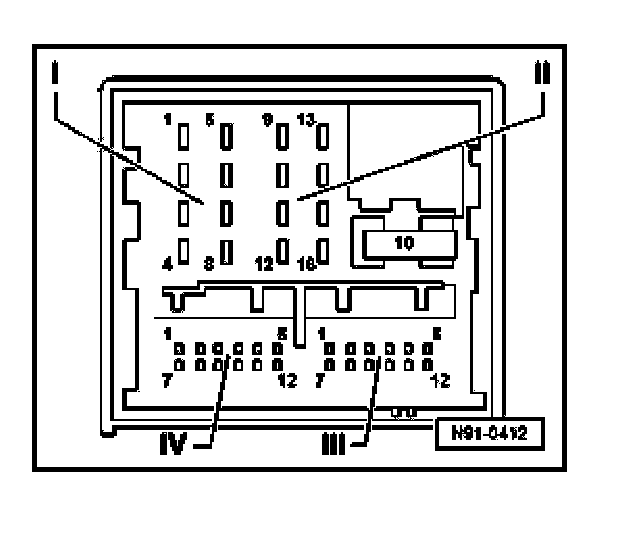
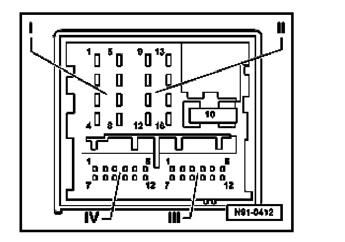
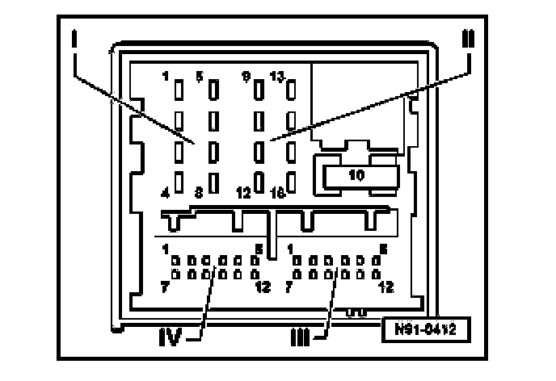
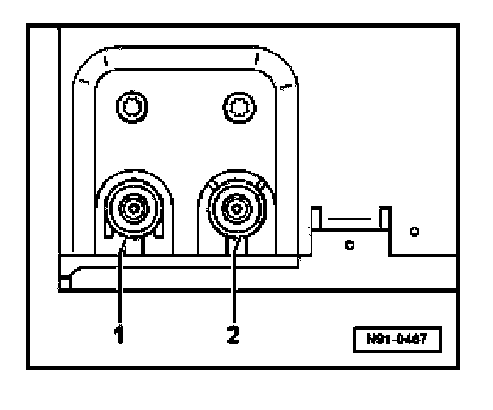

Radio System "Premium VI" and "Premium VI - Sound I"
Multi-pin Connectors, Overview

1. Multi-pin connector I
- For loudspeaker output
- Pin assignments see Multi-pin connector I, 8-pin for loudspeaker output.
2. Multi-pin connector II
- For power supply & CAN Bus
- Pin assignments see Multi-pin connector II, 8-pin for power supply and CAN Bus.
3. Multi-pin connector III
- For line-out audio signals and Telephone (where applicable)
- Pin assignments see Multi-pin connector III, 12-pin for line-out audio signals and Telephone (where applicable).
4. Multi-pin connector IV
- For CD Changer control
- Pin assignments see Multi-pin connector IV, for CD Changer control.
5. Antenna connector
- Brown
- Pin assignments
6. Antenna connector
- Transparent
- Pin assignments
NOTE: On "Premium VI - Sound I" systems, the following are outputs are input to the amplifier.
Multi-pin connector I, 8-pin for loudspeaker output

1. Right rear speaker +
2. Right front speaker +
3. Left front speaker +
4. Left rear speaker +
5. Right rear speaker -
6. Right front speaker -
7. Left front speaker -
8. Left rear speaker -
Multi-pin connector II, 8-pin for power supply and CAN Bus

9. CAN Bus -High
10. CAN Bus -Low
11. Telephone mute circuit
12. Ground (GND) ((terminal 31))
13. Connection for ignition key controlled switching on and off (S contact)
14. Anti-theft alarm system contact
15. Battery B+ (terminal 30)
16. Anti-theft system control signal, SAFE (terminal 30)
Multi-pin connector III, 12-pin for line-out audio signals and Telephone (where applicable)

1. 5 not assigned
6. Telephone audio input -
7. 11 not assigned
12. Telephone audio input +
Multi-pin connector IV, for CD Changer control

1. not assigned
2. CD Changer, left and right channel, Ground (GND)
3. not assigned
4. CD Changer, terminal 30 voltage supply (+)
5. not assigned
6. CD Changer, bus DATA OUT (CD Changer control signal from radio to CD Changer)
7. not assigned
8. CD Changer, left channel, CD/L
9. CD Changer, right channel, CD/R
10. CD Changer, control signal
11. CD Changer, bus DATA IN (CD Changer control signal from CD Changer to radio)
12. CD Changer, bus CLOCK (internal check protocol that monitors data flow)
Connectors 5 and 6, antenna connections

1. Transparent connection for antenna input signal, FM from antenna module
2. Brown connection for antenna output signal FM to antenna module (diversity, antenna selection)
The antenna signal input from connection 1 is checked in the radio and the result sent via connection 2 to the antenna module. If the antenna signal is too weak, the module then switches to another antenna (diversity). This process is not audible to the customer.